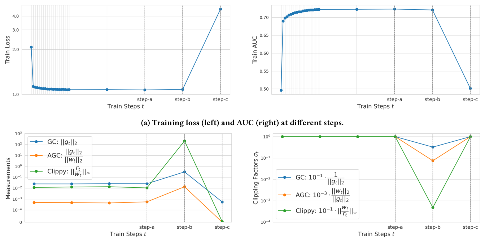

Improving Training Stability for Multitask Ranking Models in Recommender Systems (面向推荐系统多任务排序模型的训练稳定性改进)
- 会议/期刊: KDD 2023（ACM SIGKDD）
- 作者与机构: Jiaxi Tang, Yoel Drori, Daryl Chang, Maheswaran Sathiamoorthy, Justin Gilmer, Li Wei, Xinyang Yi, Lichan Hong, Ed H. Chi（Google DeepMind / Google Research / Google Inc，YouTube 推荐团队）
- 推荐链路定位: 精排（Ranking，多任务多目标排序模型训练侧）
- 研究方向: 多任务学习与列表级重排 / 去偏公平、可信隐私与工业架构
- 论文原文: https://arxiv.org/abs/2302.09178v2
- 开源代码: Clippy Adagrad 实现
TL;DR (1分钟核心速览)
本文直面推荐系统精排模型“越做越大就越容易 loss 发散”这一被严重低估的工程痛点：在 YouTube 生产级序列训练、大 batch(65k)、Adagrad 的多任务排序模型上，论证发散根因是“损失曲率陡峭时有效步长过大”，并指出 GC/AGC 因使用 \(L_2\)梯度范数、在宽层中对少数坐标的剧烈变化不敏感而失效。作者提出 Clippy：对 Adagrad 更新量\(\boldsymbol{r}_t\)施加逐层\(L_\infty\)裁剪，裁剪因子由相对阈值\(\lambda_{\text{rel}}|\boldsymbol{w}_t|\)与绝对阈值\(\lambda_{\text{abs}}\) 共同决定并显式除以学习率。在 YouTube 生产数据（按天序列训练 + 末日评估，AUC/RMSE）上，Clippy 让 Small/Large/Large+DCN 三种规模全部可稳定使用 2× 学习率，Large+DCN 上 AUC 72.37（GC 72.27、AGC 72.06），且推理零额外开销。
Background & Motivation (背景与核心矛盾)
- 主流范式: 工业精排普遍采用“共享底层 + 多任务塔”结构（图 2），依赖序列训练（时间窗内随机采批）与 Adagrad + 大 batch + 大学习率追求快速收敛；稳定性手段主要是 GC、AGC、LAMB、warmup 与 LayerNorm。
- 前人局限: 其一，现有裁剪方法在层宽极大时用 \(L_2\)范数衡量梯度，少数坐标的爆炸易被大量正常坐标“平均稀释”，裁剪因子长期贴近 1，实际步长并未被约束；其二，GC 的阈值\(\lambda\) 需逐层细调且随模型结构/学习率变化而失效，AGC 虽自适应但在复杂模型上方差极高（72.06±0.08）。
- 核心洞察 (Key Insight): 发散的本质可从二次模型理论刻画为 \(2/\eta > \alpha^*\)（\(\alpha^*\) 为损失 Hessian 最大特征值）被破坏；推荐精排比召回更易踩雷，因为 (a) 输入特征与标签分布随序列训练持续漂移、曲率突变频繁，(b) 模型容量更大，(c) 多目标共享层会把单任务的虚假梯度放大成全模型不可逆异常。
- 本文切入点: 不必精确估 Hessian，而用一阶更新的逐坐标最坏值（\(L_\infty\)）作为曲率代理，把“有效步长”直接约束在参数相对变化量上。

Method (核心方法设计)
1. 整体框架 (Overall Architecture)
模型侧沿用标准多任务精排：数百至上千维稀疏特征经 Embedding 后进入共享底层（Small/Large 为 FFN 2×512 / 4×4096，Large+DCN 追加 DCN-v2 交叉层 + LayerNorm），再分发到 6 个任务塔（含二分类与回归）。训练侧是本文的真正创新：前向反向得到梯度 \(\boldsymbol{g}_t\)后，先按 Adagrad 累积器算更新量\(\boldsymbol{r}_t=\boldsymbol{g}_t\boldsymbol{G}_t^{-1/2}\)，再由 Clippy 逐层计算裁剪因子\(\sigma_t\) 并对更新量整体缩放入参；推理解码完全不变，仅复用训练好的参数。
flowchart TD
A["输入特征 + Embedding（任务共享）"] --> B["共享底层 FFN / DCN-v2 + LN"]
B --> C["任务塔 1..N（6 任务，二分类/回归）"]
C --> D["Adagrad：r_t = g_t · G_t^(-1/2)"]
D --> E["Clippy：逐层 L∞ 裁剪因子 σ_t"]
E --> F["更新 w_(t+1) = w_t - η_t σ_t r_t"]
F --> G["线上多任务打分融合排序（零额外开销）"]2. 关键设计拆解 (Key Designs)
- 基于更新量的 \(L_\infty\)裁剪（Clippy 之核）：痛点在于\(L_2\)范数对“宽层中少数坐标爆炸”不敏感，且 Adagrad 下梯度\(\boldsymbol{g}_t\)与实际参数位移\(\boldsymbol{r}_t\)差异巨大。Clippy 直接约束\(\|\boldsymbol{r}_t/\boldsymbol{w}_t\|_\infty<\lambda\)，其裁剪因子为
其中范数均为逐元素取 max 的 \(L_\infty\)。直觉：\(L_\infty\) 抓的是最坏那一个坐标，宽层不会被“平均掉”；对更新量裁剪等价于直接限制“这一步参数相对改变了多少”，即便曲率只在个别方向陡峭也能压住。
-
相对 + 绝对双阈值与学习率归一（自适应与收敛兼顾）：单一阈值在训练初期 \(\|\boldsymbol{w}\|\approx 0\)时会过度裁剪（LAMB 正是因此初期收敛极慢，三档设置全部垫底）。\(\lambda_{\text{rel}}\|\boldsymbol{w}_t\|_\infty+\lambda_{\text{abs}}\)使 Clippy 在初期退化为 GC 风格、后期自动变成 AGC 风格；分母的\(\eta_t\)则在 warmup 阶段放宽阈值，避免拖慢起步。作者进一步把 GC/AGC/LAMB/Clippy 统一为\(\boldsymbol{w}_{t+1}=\boldsymbol{w}_t-(\eta_t\sigma_t)\boldsymbol{r}_t\)的不同\(\sigma_t\) 选择，从而可解释三者的本质差异仅在“用什么量、什么范数、什么阈值”。
-
训练目标、裁剪范围与推理效率：总损失为 6 任务损失的加权和（原文未披露具体权重与负采样细节，精排为全库候选打分而非负采样对比）。训练使用 65k 大 batch + TPU + Adagrad；裁剪仅作用于非 Embedding 参数并逐层（local）执行，稀疏 Embedding 不做裁剪以免破坏长尾特征学习。推理阶段不增加任何算子，部署成本为零。
Experimental Setup & Evaluation Protocol (实验设置与评估协议)
- 数据集与训练配置（YouTube 生产数据，出于隐私未公开统计量）：
| 数据/配置项 | 取值 | 说明 |
|---|---|---|
| 数据来源 | YouTube 生产日志（未公开） | 数百–上千维稀疏特征，6 个任务标签 |
| 划分方式 | 序列（按天）训练 + 末日评估 | 前 \(N-1\)天按时间窗随机采批训练，第\(N\) 天持续评估 |
| 指标 | AUC（二分类，越高越好）、RMSE（回归，越低越好） | 仅报告 2 个最具代表性任务 |
| Batch / 硬件 | 65k / TPU | 大 batch 使优化更受曲率主导 |
| 模型规模 | Small 7.5M（512×2）、Large 57M（4096×4）、Large+DCN 68M（DCN+LN→4096×4） | 用模型复杂度而非公开数据规模制造稳定性压力 |
| 重复性 | 每个设置 3 个随机种子，报告 mean±std | 学习率分别尝试 1× 与 2× |
- 数据划分与防穿越 (Splitting Strategy): 时间序列切分（sequential training），评估固定落在最后一天，严格避免未来数据泄露。
- 排名评测协议 (Ranking Protocol): 非采样排序无关，本文评估的是精排模型在线分布下的离线打分质量（AUC/RMSE）；稳定性通过“是否会发散 + 收敛后指标是否更高”间接度量。
- 对比基线与超参: Naive（无处理）、GC（\(\lambda\in\{10^{-1},10^{-2},10^{-3}\}\)，逐层）、AGC（\(\lambda\in\{10^{-2},10^{-3},10^{-4}\}\)，官方实现）、LAMB（梯度裁剪通用式 + 学习率缩放\(\mu\in\{10^{-1},10^{-2},10^{-3}\}\)）；Clippy 固定\(\lambda_{\text{rel}}=0.5,\lambda_{\text{abs}}=10^{-2}\)（未精调即生效）。
Key Experimental Results (实验关键数据)
1. 主实验对比 (Main Results)
| 模型设置 | 方法 | AUC (%) ↑ | RMSE ↓ | 可用最大学习率 |
|---|---|---|---|---|
| Small (7.5M) | Naive | diverged | diverged | — |
| GC | 71.68±0.13 | 1.058±0.002 | 2× | |
| AGC | 71.73±0.00 | 1.059±0.003 | 1× | |
| LAMB | 71.56±0.01 | 1.063±0.001 | 1× | |
| Clippy | 71.79±0.00 | 1.056±0.000 | 2× | |
| Large (57M) | GC | 72.07±0.05 | 1.053±0.003 | 2× |
| AGC | 72.09±0.02 | 1.054±0.002 | 1× | |
| LAMB | 72.01±0.09 | 1.054±0.002 | 1× | |
| Clippy | 72.16±0.02 | 1.051±0.000 | 2× | |
| Large+DCN (68M) | GC | 72.27±0.03 | 1.049±0.001 | 1× |
| AGC | 72.06±0.08 | 1.051±0.001 | 2×（高方差） | |
| LAMB | 72.05±0.11 | 1.057±0.001 | 1× | |
| Clippy | 72.37±0.01 | 1.047±0.001 | 2× |
（Large+DCN 上 Clippy 相对最强基线 GC：AUC +0.10 绝对点，Improv. 约 +0.14%；相对 AGC：+0.31 绝对点。原文强调在该场景 0.1% AUC 已属显著并可转化为线上指标收益。）
2. 消融实验 (Ablation Study)
原文未提供“逐组件移除”的数值消融网格，而是以训练动力学诊断 + 与各基线的等价/差异关系完成机制归因，下表为按组件拆解的对照（数值来自主实验与图 4/5/6/7）：
| 变体 / 对照 | 关键差异 | 观测结果 |
|---|---|---|
| GC（\(L_2\) 梯度 + 固定阈值） | 范数类型、裁剪对象不同 | Large+DCN 退化到 1× 学习率；step-b 裁剪因子偏大 |
| AGC（\(\|\boldsymbol{g}\|/\|\boldsymbol{w}\|\)，\(L_2\)） | 阈值自适应但范数仍为\(L_2\) | 2× 学习率发散；Large+DCN 方差极大（72.06±0.08） |
| LAMB（仅用更新方向） | 丢弃更新幅值 | 三档设置均垫底，初期收敛过慢 |
| Clippy 去掉 \(L_\infty\)（退化为\(L_2\)） | 灵敏度下降 | 图 4(b) 显示裁剪因子比 Clippy 大约 2 个数量级 |
| Clippy 去掉 \(\lambda_{\text{abs}}\)与\(\eta_t\)项 | 初期\(\|\boldsymbol{w}\|\approx0\) 过度裁剪 | 对应 LAMB 式初期收敛停滞的失效模式 |
| Clippy on 翻译任务（图 7） | 跨域迁移（Adagrad + 非推荐任务） | 相对 AdamW/Adagrad 仍有稳定性收益 |
3. 关键实验发现 (Key Findings)
- 唯一在三种规模下都能承受 2× 学习率的方法：Clippy 在 Small/Large/Large+DCN 全部采用 2×，而 GC 在 Large+DCN 被迫退回 1×、AGC 在 2× 下直接发散，说明其约束力在大容量模型上未被稀释。
- 增益随模型复杂度单调放大：Small/Large 上 Clippy 与 GC 基本持平（71.79 vs 71.68、72.16 vs 72.07），但 Large+DCN 上拉开到 72.37 vs 72.27 并同时拿到最低 RMSE 1.047——正好对应生产中更复杂模型更易发散的现象。
- 失效机制被定位到裁剪因子的量级：在 step-b（损失刚开始抬升、AUC 初降）时刻，Clippy 的 \(\sigma\) 比 GC/AGC 小两个数量级；图 6 还显示裁剪主要发生在底层共享层（参数范数小→阈值小），与“底层微小扰动会被放大到输出”的直觉一致。
Highlights & Limitations (亮点、对比与审稿批判)
- 与代表作对比 (vs. Prior Work): 相对 Pascanu 的 GC，本文把范数从 \(L_2\)换成\(L_\infty\)并把裁剪对象从梯度换成 Adagrad 更新量；相对 Brock 的 AGC，引入绝对阈值与学习率归一，使早期呈 GC 行为、后期呈 AGC 行为，并真正消解阈值逐层调参；相对 LAMB，保留更新幅值而非只留方向，避免初期收敛迟缓。三者被纳入同一\(\sigma_t\) 框架，理论谱系清晰。
- 可迁移亮点: ①“先统一到 \(\boldsymbol{w}_{t+1}=\boldsymbol{w}_t-(\eta_t\sigma_t)\boldsymbol{r}_t\)，再设计\(\sigma_t\)”这种改写范式可让任意优化器（Adam/Adagrad）快速接入稳定化；②仅裁非 Embedding 参数 + 逐层裁剪 + 逐坐标\(L_\infty\) 的组合，是稀疏特征场景下的低成本工程模板。
- 审稿级局限批判: ①完全没有收敛性/稳定性的理论保证，也无与谱半径的定量联系，仍属强经验性工作；②评测无公开数据集、无统计显著性检验（仅 3 seed 的 std），且“稳定性”本身仍靠“是否发散+最终指标”间接度量，缺少可复现的稳定性度量指标；③\(\lambda_{\text{rel}},\lambda_{\text{abs}}\) 虽称免调，但在新结构上仍可能敏感，超参分析缺失。
Rating (四维评分)
- 方法创新性 (Novelty): ⭐⭐⭐⭐ （把裁剪对象/范数/阈值三件事统一重述并针对性改造，洞察扎实，但缺少理论收敛支撑）
- 评估协议与实验扎实度 (Protocol & Experiments): ⭐⭐⭐⭐ （时间切分防穿越、3 seed±std、三种规模×两档学习率较完整，可惜无公开数据与显著性检验）
- 写作与数学规范度 (Clarity & Rigor): ⭐⭐⭐⭐ （\(\sigma_t\) 统一框架与失效机制推导清晰，公式与算法伪码对齐；组件消融数值化不足）
- 工业落地与复现价值 (Industrial & Practical Value): ⭐⭐⭐⭐⭐ （已在 YouTube 生产大型模型上线、推理零开销、官方开源 Clippy Adagrad，可即插即用）